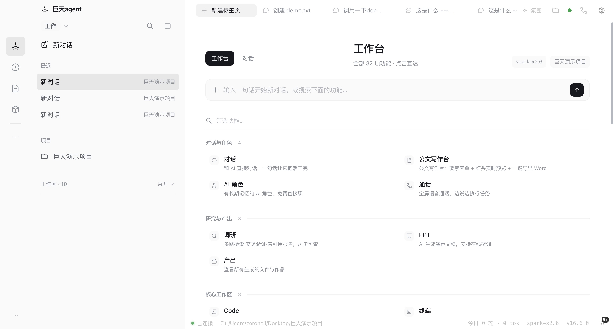

特性与参数
规格，摊开说。
没有隐藏项，没有「取决于」。每一条都写明白。
macOS 13+（Apple Silicon / Intel）· Windows 10+ x64 · Linux 全发行 · Android 可独立运行
首次安装后自动清理临时文件，不占多余空间。
低性能设备自动降级玻璃模糊与动画，老机器也能跑。
界面、引擎、工具服务一体。没有微服务，没有云端编排。
会话、消息、记忆、知识库全部落盘本机，导出随时带走。
自带 API Key 接入，也可接本地模型；21 档免费模型开箱即聊。
深浅双主题 · 动态壁纸 · 十种强调色。
只替换变化文件，不重装；应用内一键更新。
完整特性
打开就有的部分。
001 · 多标签工作区
同窗
多开
对话、代码、终端、知识库；Cmd+N/T/W 全键盘，切走不丢状态
002 · Git 检查点
改坏了
不慌
每轮对话前自动快照工作目录，一整轮改动一键撤销
003 · 深度思考档位
5 档
随消息切
关闭/低/中/高/最大——简单问题不浪费，难问题不糊弄
004 · 全局全文搜索
搜正文
直达消息
搜标题也搜每一条消息正文，命中直接跳转并高亮
005 · 原生玻璃界面
macOS
液态玻璃
原生窗口材质 + 系统菜单齐备；低性能设备自动退回纯净底色
006 · 语音通话模式
边说边
干活
桌宠一键唤起，双手占用时最好用
007 · 命令面板
⌘K
一步到位
跳会话、开页面、发指令
008 · 长期记忆
记得你
的偏好
只存索引不塞全文，重要细节按需取
009 · 知识库
回答
有出处
文档导入即检索，引用可点开
010 · 截图即问
框选
直接问
「这是什么」「报错什么意思」，AI 直接看图回答
011 · PPT 生成
一句话
到 .pptx
PowerPoint / Keynote / WPS 直接打开继续改
012 · 定时任务
到点
自动跑
日报、巡检、监控，它替你盯着
架构
一个进程，
一个入口。
界面层负责对话，Agent 引擎负责决策，58 个工具直连真实系统。请求、决策、执行、回传，闭环在一台电脑上完成。没有为了架构而架构——一个窗口把事情办完，是它全部的设计目标。
